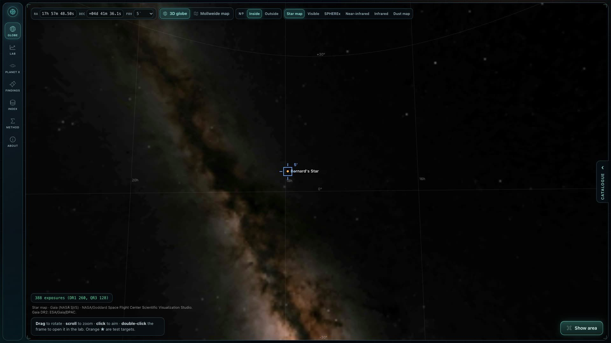
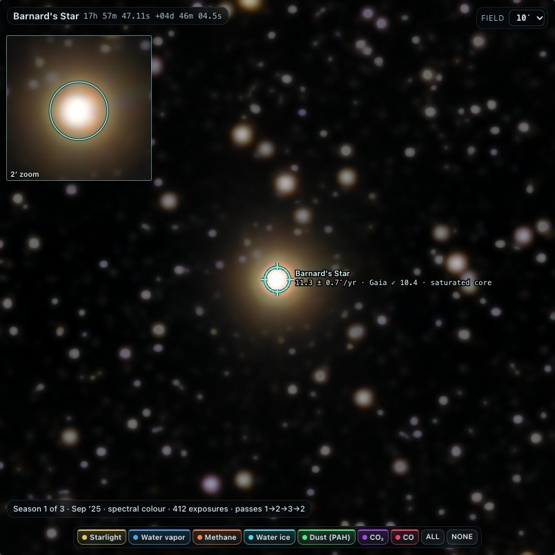
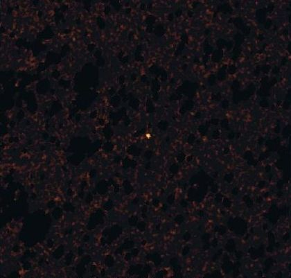
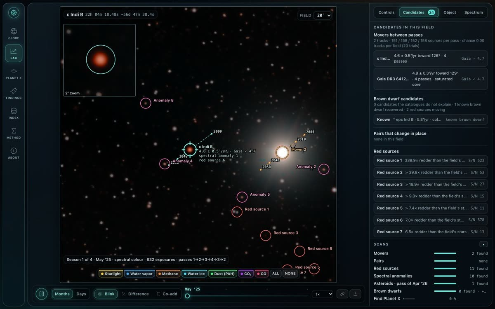
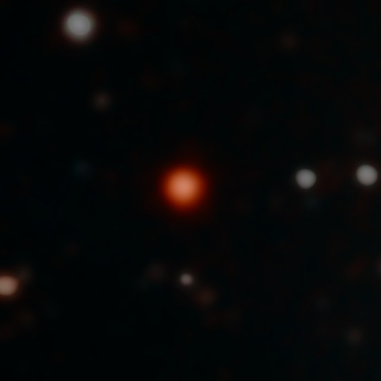

NASA Space Apps Challenge 2026 · Barcelona
SPHEREx Space
Flip through the sky.
Spot what moves.
Challenge: Planet X and SPHERExTeam: Good Karma Labspherex.space

Good Karma Lab · Aleksandr Ostapenko
1 / 7
The challenge
A new sky every six months. Too much for any one person.
- SPHEREx maps the entire sky every six months in 102 colours of infrared light.
- Asteroids, comets, nearby stars and brown dwarfs shift between images. Pluto was found that way.
- But raw frames show colour flicker, not motion: each exposure sees a star at another wavelength and pixel grid.

spherex.space · the globe on NASA’s star map: 1.6 million SPHEREx exposures to open
SPHEREx Space
2 / 7
Coordinates in, a little video out
Play the seasons. Watch it move.
- Every season is cleaned, stacked and coloured by its own spectrum, then played 1 → 2 → 3 → 2.
- Nearby stars and brown dwarfs step between passes: Barnard's Star 10.7 ± 0.8″/yr in a 20′ field, Gaia 10.4 ✓.
- ε Indi B, a brown dwarf 12 light-years away, crosses the white stars at 4.6 ± 0.5″/yr (Gaia 4.7). Days also show asteroids.

The lab · Barnard's Star 10′ · ringed with its motion and the Gaia check
SPHEREx Space
3 / 7
Find Planet X
Too faint for one picture. Add up the orbit.
- Exposures added along every orbit a body could have, 30–2000 au.
- Eris, found blind and linked over three passes: 95.6 ± 0.4 au (JPL 95.5). Makemake 52.5 ± 0.2 au (JPL 52.3). Sedna, V 20.8: a strong lead at 83.0 au (JPL 83.0).
- No Planet X is claimed yet.

Eris · its exposures added along its path · 95.6 ± 0.4 au
SPHEREx Space
4 / 7
What does not look like a star
The search ranks a brown dwarf first.
- Any dot gives its spectrum in 102 colours; the tool builds the field's ordinary star from them and flags what does not fit.
- In its field ε Indi B comes out as spectral anomaly 1: a cold brown dwarf glows at the long wavelengths.
- Every find gets a passport: score, wavelengths, motion. “Anomaly”, never “discovery”.

ε Indi B 20′ · anomaly 1 with its passport
SPHEREx Space
5 / 7
Validated on real data
Every number checked against another telescope.
| Check | What we measured | Result |
|---|---|---|
| Nearby stars vs ESA Gaia | Barnard's Star 10.7 ± 0.8″/yr at 20′ (Gaia 10.4) · ε Indi B 4.6 ± 0.5″/yr (Gaia 4.7) · WISE 0855 7.9 ± 0.6″/yr (SIMBAD 8.15) | same motion ✓ |
| Known asteroids, blind | 6 of 8 known bodies to V 19.1 found blind; every track a known body in the December 2025 60′ ecliptic field | 0 false ✓ |
| Bodies beyond Neptune | Eris 95.6 ± 0.4 au, 3 passes linked (JPL 95.5) · Makemake 52.5 au (JPL 52.3) | found ✓ |
| Chance control | every search re-run on shuffled data, 20 trials per field | 0.0 / field ✓ |
Limits: bright stars saturate · asteroids to about V 19 · a lead is not a discovery.
SPHEREx Space
6 / 7
Try it now: free, no account
spherex.space
Pick any patch of sky. Play it in time. Help spot what moves.
Code · github.com/Good-karma-lab/Planet-X-SPHEREx (Apache-2.0)
Team · Good Karma Lab · Aleksandr Ostapenko · Katherine Karmatskikh
Data · NASA SPHEREx (IRSA) · ESA Gaia DR3 · DSS · 2MASS · WISE
Built with AI coding assistants (Claude Code) under the team's direction. All pictures are computed from real data; no AI-generated images. This work uses SPHEREx data products (JPL and Caltech, funded by NASA). Independent project, not endorsed by NASA.

Good Karma Lab · NASA Space Apps Challenge 2026
7 / 7